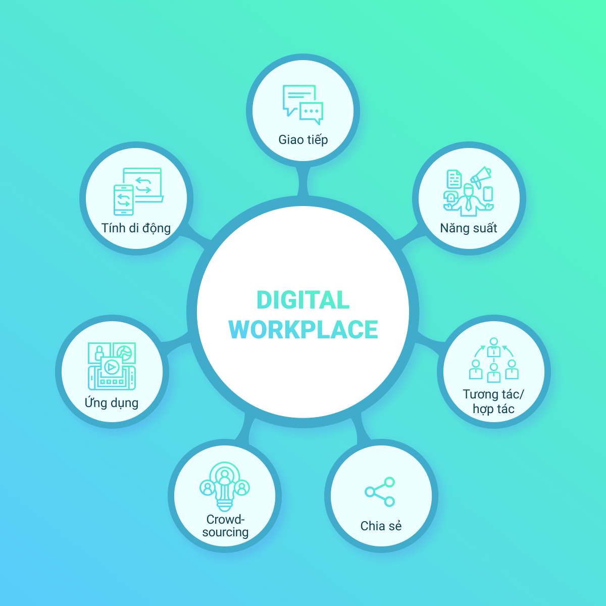

Giới thiệu về phân hệ Digital workplace
VESS Digital Workplace là một môi trường làm việc – chuyển đổi mô hình làm việc từ thủ công sang tự động hóa, điện tử hóa hệ thống dữ liệu, quy trình làm việc. Cung cấp trang bị để làm việc hiệu quả cũng như cung cấp dịch vụ khách hàng tốt nhất.
Môi trường làm việc số cho phép:
- Các thành viên trong nhóm tương tác hiệu quả
- Quản lý các dự án và nhiệm vụ được hiển thị đầy đủ thông tin
- Giải quyết các vấn đề, ticket yêu cầu, lỗi nhanh chóng
- Tự động hóa các quy trình kinh doanh tiêu chuẩn và có tính lặp lại
- Tích hợp với các ứng dụng bên thứ ba
- Tự động tạo báo cáo để đưa ra quyết định dựa trên dữ liệu tốt hơn
